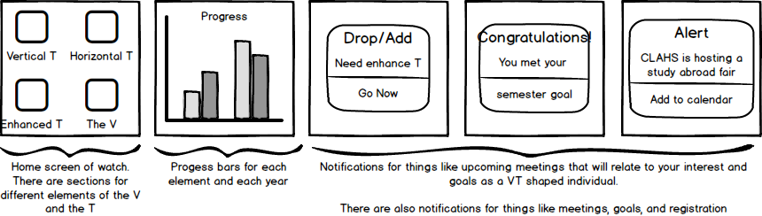
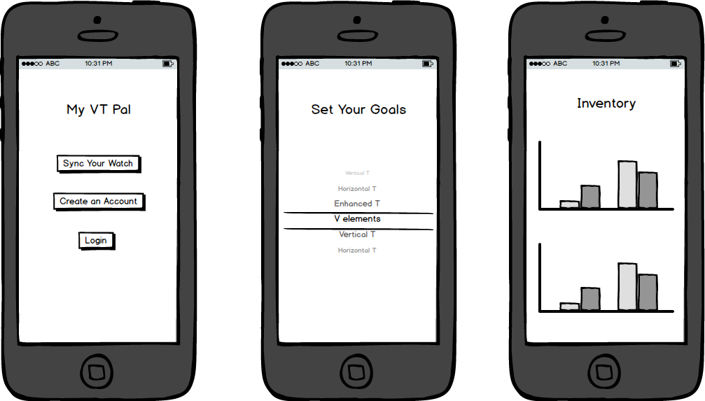

My Design
The myVT Pal smartwatch and app
I like the idea of the VT shaped student as it was presented to us in this course. I think there are many practical ways that the model applies to students across the university, and in the liberal arts in particular. Before taking this class I hadn't heard of the concept before, but during our research for various assignments over the course oft the semester I learned that it applies to things that many students have already been doing. Many of us are already becoming experts in our disciplines, exploring technology, gaining a breadth and depth of knowledge, and participating in experiential learning. The design I created serves to help the student who might not know how the VT shaped student applies to them and they need help setting goals to shape their experience at Tech around the model. Students also might not know how to balance the different elements, especially if they are new to college. The watch and calendar element of the design can help with the time management and prioritization aspect of college.
My design is modeled after a smart watch and corresponding health app for an iPhone. The point of the watch is to help students keep track of their progress towards elements of the V and the T easily and on the go, similar to how a smart watch monitors different aspects of health.
My design seeks to improve upon the VT model by making it more tangible. It overs a way for a student to put a plan in place and also hold themselves accountable through wearable technology.
Inside the watch
Their is a button for each section of the V and the T on the main page of the tracker of the watch. When you click on each section you'll see your progress for that element. Similar to a fitness tracker, you can change the time frame represented on the screen in the settings. You can look at your progress from views like month to month, semester to semester, and year to year. For example, the Vertical T (which is related to your discipline) would track which classes you've taken and measure your progress toward your degree. The tracker for the V would have trackers for things like your community involvement and internship hours.
Another aspect of the smartwatch would be the notifications.Their would be calendar alerts like notifications for Drop/Add, reminders about internship applications, and interest meetings that match your goals and interests. The alerts are sinked with your calendar and help you keep track of all that you have going on as well as helping you plan for your next step. You also get notifications for meeting goals you've set. Your interests and goals are filled out within the iPhone app that corresponds with the watch.
Inside the App
Like other smartwatches and wearable technology accesories,the myVT pal has a corresponding app for smartphones. When you receive your watch you are instructed to download the myVT pal app. You sync your watch with your phone and create an account.
When you are in the app, you are instructed to set your goals. This is similar to how fitness apps have you create a profile with your current health stats and your goals.